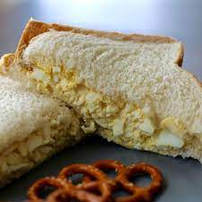

Perfect Egg Salad Sandwhich

The pinnacle of egg salad sandwhiches!
Ingredients
- 8 eggs
- 1/2 cup mayonnaise
- 1/4 cup chopped green onion
- 1 teaspoon prepared yellow mustard
- 1/4 teaspoon paprika
- salt and pepper to taste
Steps
Step 1
- Place eggs in a saucepan and cover with cold water. Bring water to a boil and
Immediately remove from heat. Cover and let eggs stand in hot water for 10 to 12 minutes.
Remove from hot water, cool, peel, and chop.
Step 2
- Place chopped eggs in a bowl; stir in mayonnaise, green onion, and mustard.
Season with paprika, salt, and pepper. Stir and serve on your favorite bread and crackers.